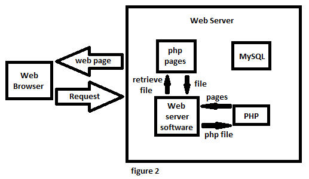

PHP or also known as Hypertext Preprocessor is a general-purpose programming language which is especially designed for web development. Unlike JavaScript (Js) which is a language for client-side purposes, PHP is created for server-side scripting wherein it can pull and edit informations from and in the database. It is known for its ability to work with different languages in order to make a better web application. This language can work with HTML, Cascading Style Sheet (CSS), Js and MySQL to create web pages for an application. PHP codes are enclosed within the instructions (end of the code) which are like tags in HTML ( see Figure 1).
Being a Server-side scripting language is the main target of PHP. Different Web application files created with its extension .php and has instructions in it that are written using php must ran from a web server (i.e. WAMP server ) and accessed using a web browser for the instructions to be executed by the web server software (i.e. Apache ). To further illustrate that, refer to figure 2.
PHP5 can work with and on the database using MySQLi extension. PHP MySQLi meaning “MySQL improved” lets you connect and use the MySQL database. This extension provides an interface from the accessed MySQL database. Another extension that lets you access different database system is the PDO or PHP Data Objects. PDO is effective if you wish to change the database in your project. PHP MySQLi can be installed or is mostly installed if you installed the PHP MySQL package.